Kogashi, Ibaraki: things to do, food and stays
Kogashi · Ibaraki
Kogashi
Highlighted on the Ibaraki map.
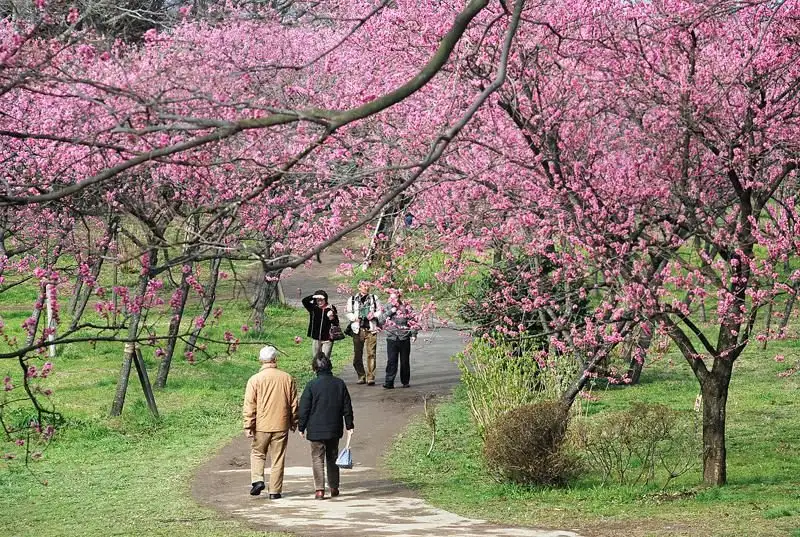
Stay
アパホテル〈茨城古河駅前〉
APA Hotel < Ibaraki Koga Ekimae >
Hotel in Higashimoto, Kogashi; 5-minute walk from Jrkoga Station.
ホテルルートイン古河駅前
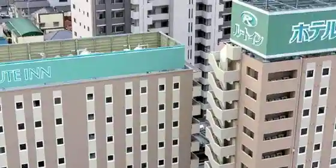
Hotel Route Inn Koga Ekimae
Hotel in Higashi, Kogashi with buffet meals and breakfast available.
ＨＯＴＥＬ Ｒ９ Ｔｈｅ Ｙａｒｄ 古河
HOTEL R9 The Yard Koga
ホテル サンシャイン
Hotel Sanshain
Hotel in Asahi, Kogashi with buffet meals and breakfast available.
エス.ハイドパークホテル 古河駅前
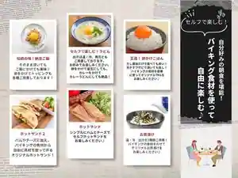
Esu. Haido Park Hotel Koga Ekimae
Hotel in Higashi, Kogashi with buffet meals and breakfast available.
古河セントラルホテル
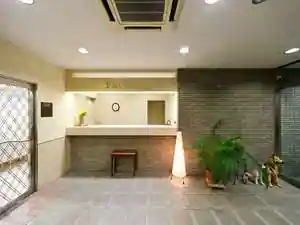
Koga Sentoraru Hotel
Hotel in Higashi, Kogashi with breakfast available; 3-minute walk from Koga Station.
ホテル古河ヒルズ
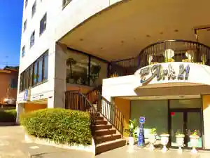
Hotel Koga Hiruzu
Hotel in Higashi, Kogashi; 4-minute drive from Koga Station.
ホテル 津賀家
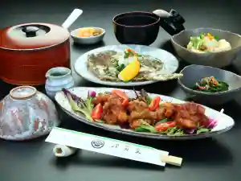
Hotel Tsuga Ie
Hotel in Hon, Kogashi with breakfast available and Wi-Fi.
ホテル 山水
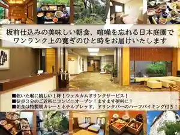
Hotel Sansui
Dining
しょうがラーメン 七の庫
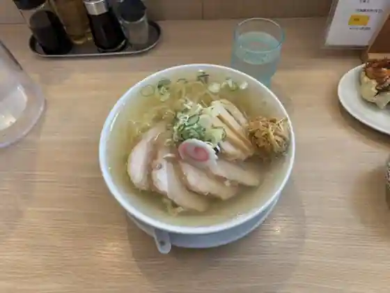
Shoga Ramen Shichi No Ko
たたみ家
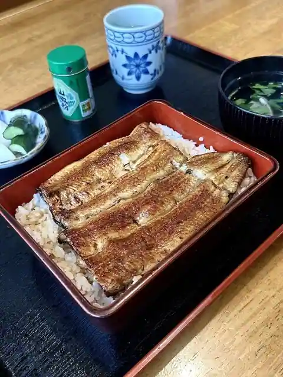
Tatami Ie
ケンちゃんラーメン 古河店
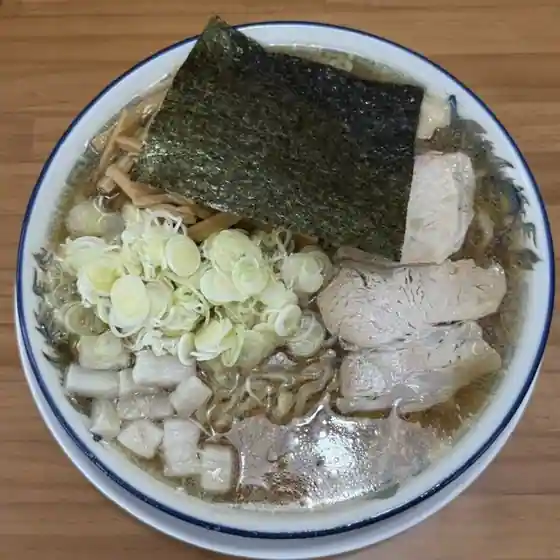
Ken Chan Ramen Koga
麺堂 稲葉 古河本店
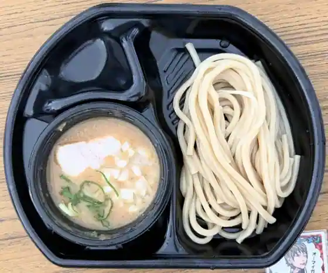
Men Do Inaba Koga Hon
メキシカン キッチン バルバ
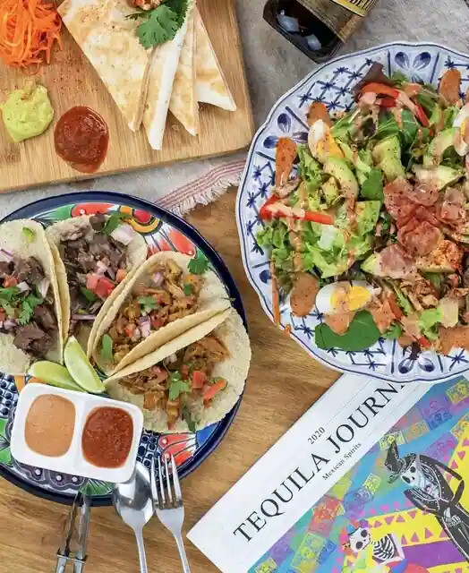
Mekishikan Kitchen Ha Ruha
藤屋
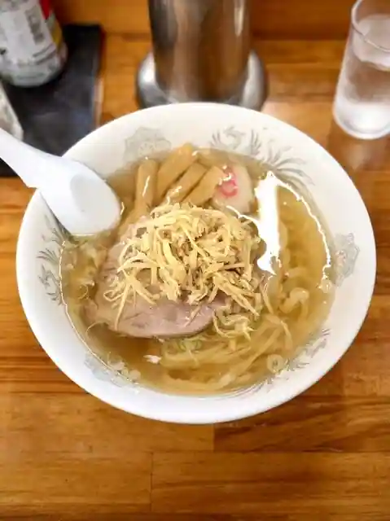
Fujiya
それいけ!たかちゃんラーメン
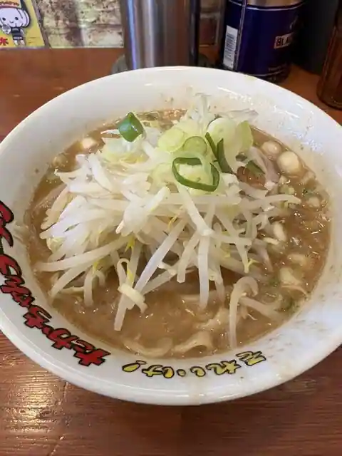
Soreike! Takachan Ramen
餃子の丸満 本店
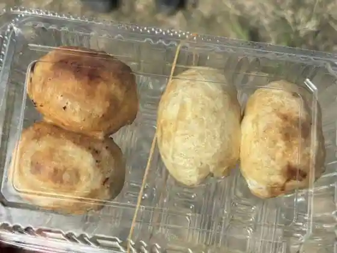
Gyoza No Maru Man Hon
もっけい
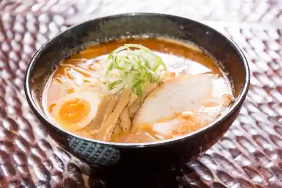
Mokkei
Cafe 5438 Ocha-Nova
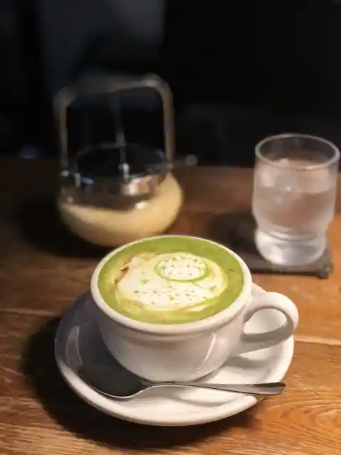
Cafe 5438 Ocha-Nova
阿波家
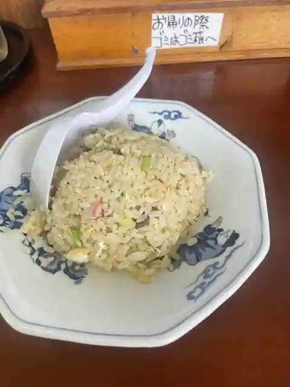
Awa Ie
良花
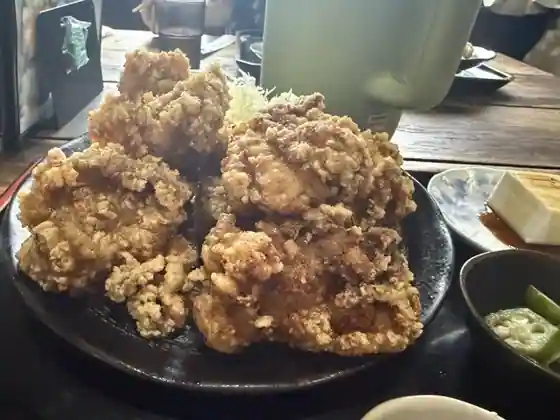
Ryo Hana
さかさ食堂
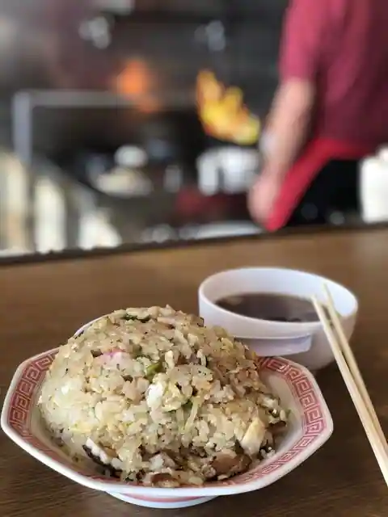
Sakasa Shokudo
うなぎ 川松
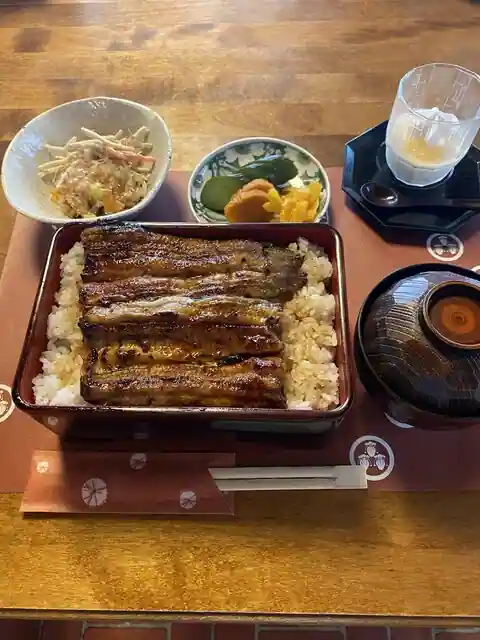
Unagi Kawa Matsu
レストラン フランドル
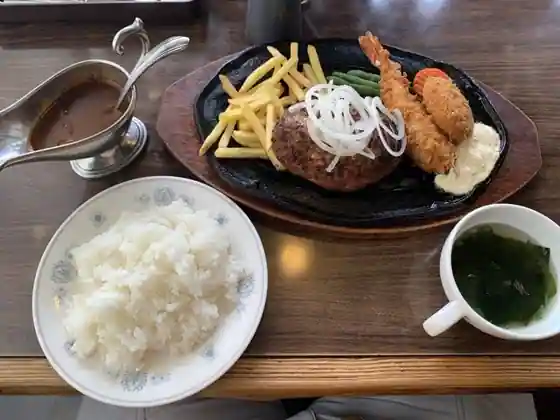
Restaurant Furandoru
三軒家
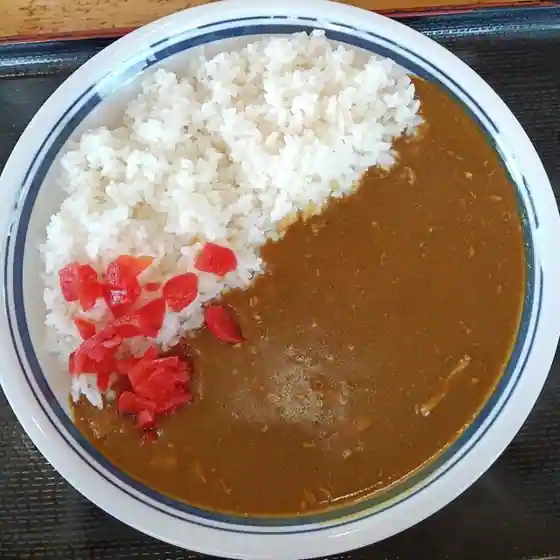
Sangenya
文福飯店
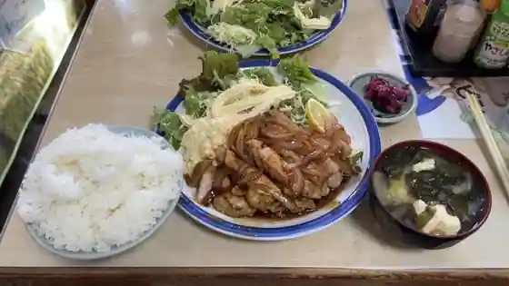
Bunpuku Meshi
喜楽飯店
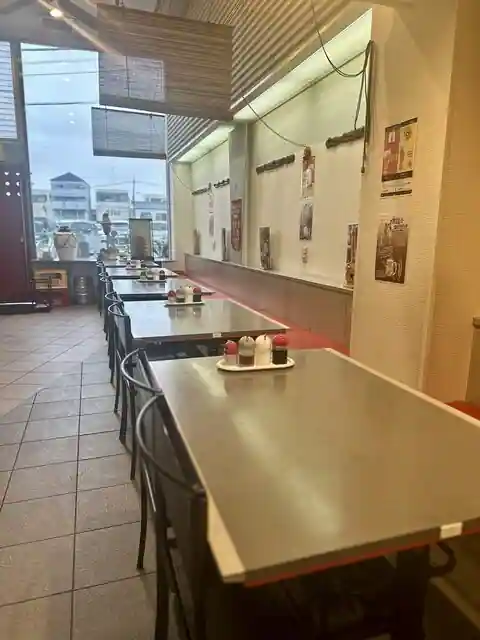
Kiraku Meshi
畑の黒ダイヤ
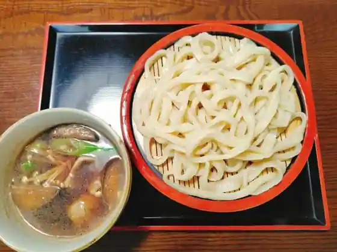
Hatake No Kuro Daiya
麺処とみい
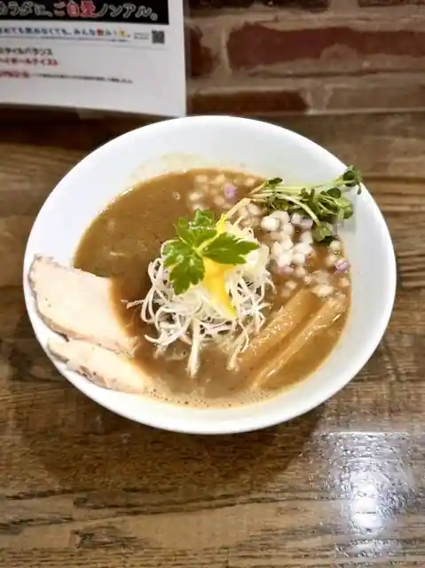
Men Tokoro Tomi
ラーメン長瀬
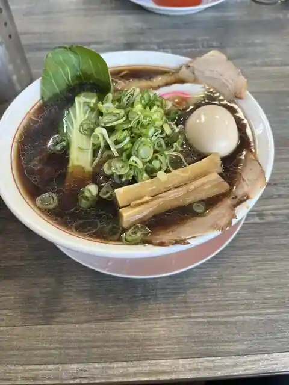
Ramen Nagase
めん処 蔵屋
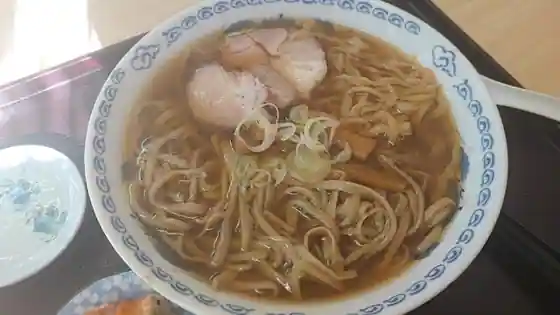
Men Tokoro Kura Ya
ゆるりの森
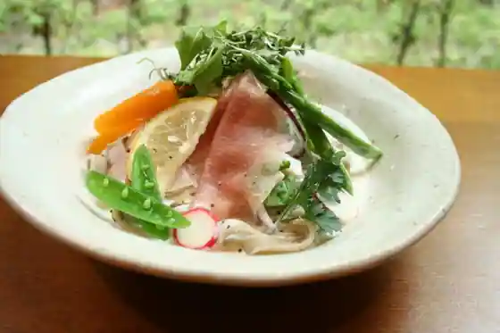
Yururino Mori
8代葵フルーツパーラー
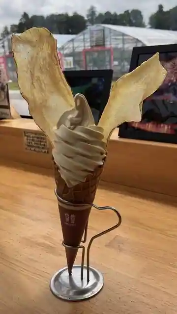
8 Dai Aoi Furutsupara
Sights
Neburu Park
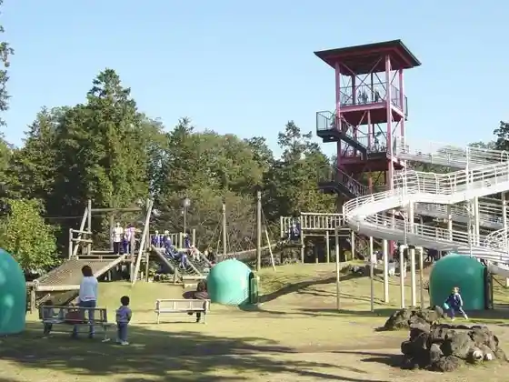
Roadside Station Makuraga no Sato Koga
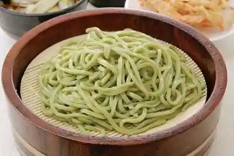
Kogashi Kubo Park (Kogashi General Park)
Ko Minka kominka - Sui -sui
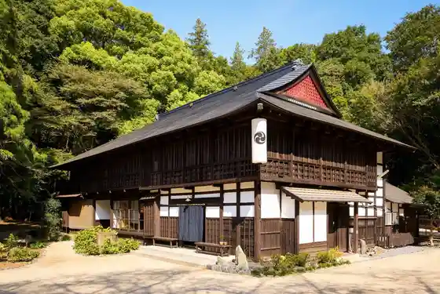
Tomoe Nyugyo (Kabu) Gyunyu Museum
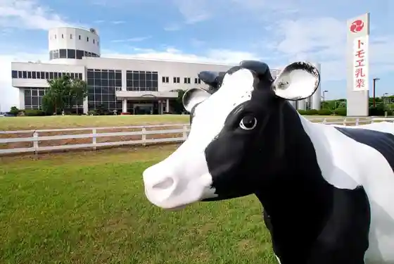
Kogashi History Museum
Takami Senseki Memorial Museum
Kogashi Literature Museum
Aoki Shuzo
O Yasumi Tokoro Saka Cho
JA Ibaraki Mutsumi Nosambutsu Chokubai Tokoro Sowa Mise
Kyu Hida Ie House
Kaiseki Yu Zen Fukumitsu
Musashi Ya
Katsu Taro Sohonten Sowa Mise
Tenkoku Art Museum
Kogashi Machikado Art Museum
Katsu Taro Oka Sato Mise
Kyu Nakayama Ie House